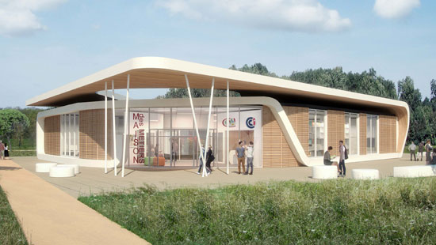

Bonjour, je suis Lya-Marie Barthe, en seconde au lycée Jay de Beaufort; à Périgueux 24000. Je vais vous présenter ci-dessous mon projet d'orientation. Je voulais, au départ, suivre l'enseignement général. Je comptais faire les options:
Cependant, mon choix s'étant affiné, mes décisions ont changées.
Aujourd'hui, je veux intégrér un nouveau lycée pour réaliser un bac professionel dans le milieu de la vente, en alternance. La CCI.
Cet établissement, uni au CFA de la même ville, propose, avec celui-ci, de multiples options, dans la vente, le commerce,etc.. Il est spécialisé dans les études en apprentissage, c'est à dire, qui mixent les semaines avec un patron en entreprises et celles en présentiel.
Je souhaite après mon bac pro, obtenir soit un BTS en négociation et relation client soit un Master immobilier, afin de devenir négociatrice en immobilier.Le négociateur immobilier est un intermédiaire entre les acheteurs et les vendeurs de biens immobiliers. Ce commercial peut exercer sous différents statuts juridiques tels que salarié d’agent commercial ou en portage salarial, entre deux entreprises. Il est polivalent et gère les biens, les évalue, les estiment et les vends. J'aimerai monter mes propres agences à travers le pays voir même le monde. J'ai pour projet de partir vivre au Japon et de m'y implanter.
<